🎫 Billet d'entrée — je vérifie mes outils (5 min, sans note)
Trois questions sur ce que tu sais déjà. Aucune note : c'est un aiguillage, pas une épreuve. Si l'une résiste, la capsule juste en dessous te remet en selle en trois minutes.
🎒 Je révise en 3 minutes
Un matériau est la matière dont l'objet est fait : acier, aluminium, polymère, bois. On le choisit pour ses propriétés — résistance, masse, tenue à l'eau, coût.
Une source d'énergie est ce qui alimente l'objet : une batterie, un panneau solaire, le muscle. La forme d'énergie, elle, dit sous quel aspect elle circule : électrique, mécanique, thermique.
Un capteur informe (il mesure et transmet une information) ; un actionneur agit (moteur, lampe, pompe). Entre les deux, un calculateur décide.
🔎 Activité 1 — De quoi ces trois véhicules sont-ils faits ? (~25 min)
![Les trois solutions comparées. S1 vélo-cargo à assistance électrique : aluminium et acier, 48 kg, batterie rechargeable, énergie électrique, contrôleur d'assistance et afficheur, charge utile 120 kg, autonomie 55 km, réparabilité 8 sur 10. S2 fourgonnette électrique compacte : acier et aluminium, 1350 kg, batterie, électrique, calculateur embarqué avec capteurs et navigation, charge utile 650 kg, autonomie 210 km, réparabilité 7 sur 10. S3 robot mobile : aluminium, acier et polymères, 95 kg, batterie, électrique, capteurs, cartographie, calculateur et supervision humaine, charge utile 80 kg, autonomie 38 km, réparabilité 5 sur 10.](Images/trois_solutions_shanghai.svg)
a) Les matériaux et ce qu'ils apportent
b) L'énergie : source et forme
c) Le traitement de l'information
💡 Aide de niveau 1
Pour l'énergie, distingue bien deux questions : d'où elle vient (la source) et sous quelle forme elle circule (électrique, mécanique…). Les trois véhicules partagent la même réponse à la première question.
💡💡 Aide de niveau 2
Pour la consommation : compare les masses avant de chercher ailleurs. 48 kg, 95 kg, 1350 kg. Déplacer une masse coûte de l'énergie à chaque démarrage et à chaque montée ; sur un parcours urbain fait d'arrêts permanents, c'est le facteur qui domine tout le reste.
Pour l'information : compte ce que chaque solution doit « savoir ». S1 doit seulement doser l'assistance. S3 doit se situer sur une carte, éviter les obstacles et rendre des comptes à un opérateur : c'est bien plus.
📖 Correction complète (à ouvrir APRÈS avoir vérifié)
L'aluminium est retenu pour son rapport résistance/masse : sur un véhicule, chaque kilo évité est de l'énergie économisée à chaque démarrage, pendant toute la durée d'usage.
Les polymères du robot répondent à un autre besoin : mouler des formes complexes, légères, qui n'interfèrent pas avec les capteurs. Un même véhicule combine donc plusieurs matériaux, chacun pour une raison précise.
La source est identique pour les trois : une batterie rechargeable. La forme d'entrée est électrique. C'est un point important : comme la source ne les distingue pas, la comparaison devra porter sur autre chose.
La consommation suit la masse : 18, 42 puis 165 Wh/km pour 48, 95 puis 1350 kg. Ce n'est pas une coïncidence, c'est la relation principale de tout véhicule.
Le traitement de l'information croît avec l'autonomie de décision demandée. Et « supervision humaine » est un mot à retenir : le robot est automatisé — il exécute seul — mais il n'est pas autonome au sens où personne ne le surveillerait.
🧠 À retenir : on caractérise un objet technique par trois entrées — ses matériaux, son énergie (source et forme), et ce qu'il fait de l'information. Quand deux solutions se ressemblent sur l'une, la comparaison se joue sur les autres.
⚠️ Piège classique : confondre la source (la batterie) et la forme (électrique). La source dit d'où vient l'énergie ; la forme dit sous quel aspect elle circule.
Critère de réussite : tu sais désigner, pour chaque solution, un matériau et la raison de son choix, la source et la forme d'énergie, et ce que le système traite comme information.
♻️ Activité 2 — Où nos choix pèsent-ils vraiment ? (~30 min)
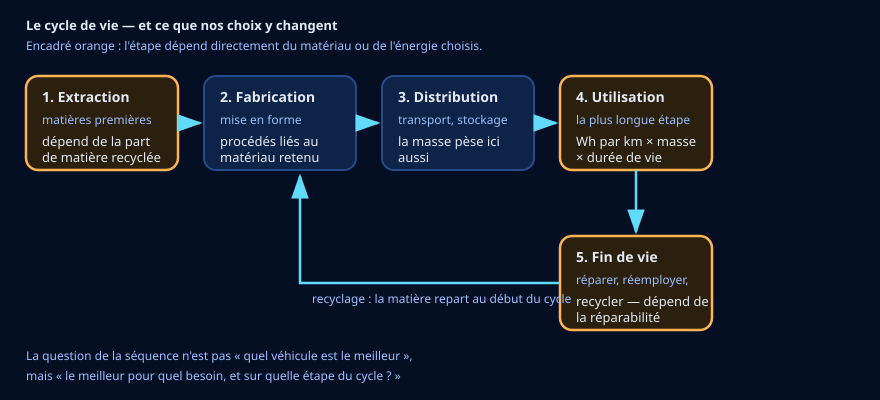
a) Relier une donnée à l'étape qu'elle concerne
b) L'étape la plus lourde n'est pas celle qu'on croit
c) Le piège du « zéro émission »
d) Ta justification écrite
🪜 Version étayée — des phrases à compléter
Le niveau attendu est exactement le même : on retire l'obstacle de la rédaction, pas l'exigence.
- « Je prends la solution ____. »
- « Ses choix de matériaux et d'énergie pèsent surtout sur l'étape ____. »
- « C'est parce que ____, et cela dure ____. »
💡 Aide de niveau 1
Pour chaque donnée, demande-toi à quel moment de la vie de l'objet elle produit son effet : avant qu'il existe, pendant qu'il roule, ou après.
💡💡 Aide de niveau 2
Fais le calcul mentalement : 18 Wh/km sur 30 km par jour, 200 jours par an, pendant 8 ans. Puis recommence avec 165 Wh/km. L'écart n'est pas « un peu » — c'est un ordre de grandeur, et c'est ce que veut dire « l'utilisation domine ».
📖 Correction complète
La matière recyclée agit en amont, à l'extraction : chaque kilo recyclé est un kilo qu'on n'extrait pas. L'énergie par kilomètre agit pendant l'utilisation. La réparabilité agit à la fin — et surtout, elle repousse cette fin : un objet réparable vit plus longtemps, donc s'amortit mieux.
Sur un véhicule qui roule huit à douze ans, l'utilisation domine largement. C'est ce qui explique qu'un petit écart par kilomètre décide de tout : multiplié par des dizaines de milliers de kilomètres, il devient l'écart principal.
« Zéro émission » ne vaut que pendant l'usage. L'extraction du lithium, la fabrication de la batterie et son recyclage ont un coût bien réel. Ce n'est pas un argument contre l'électrique : c'est une raison de raisonner sur tout le cycle, pas sur une étape.
🧠 À retenir : les choix de matériaux et d'énergie pèsent surtout sur trois étapes — l'extraction, l'utilisation et la fin de vie. Sur un objet qui dure des années, c'est l'utilisation qui domine.
⚠️ Piège classique : juger un objet sur le jour de son achat. Un objet technique se juge sur toute sa vie, de l'extraction de sa matière à son recyclage.
Critère de réussite : tu relies chaque donnée du tableau à l'étape du cycle qu'elle concerne, et tu sais dire laquelle pèse le plus, avec un argument de durée.
📏 Activité 3 — Mesurer pour de vrai : le protocole (~35 min)
👥 Qui fait quoi — et quand on échange
Deux rôles seulement, et on échange à la moitié du temps. Un rôle est un tour, pas une étiquette.
- Le pilote tient l'outil — le clavier, le capteur, le tableur. Il exécute ; il ne décide pas seul.
- Le vérificateur relit chaque nombre et chaque unité avant qu'on les écrive. Il a le droit d'arrêter le groupe.
Si vous êtes trois ou quatre
- Le scribe écrit la trace commune — et note aussi ce que vous n'avez pas su faire.
- Le porte-parole explique à la classe. Il ne parle qu'avec ce que le scribe a écrit : si la trace ne suffit pas, c'est la trace qu'il faut reprendre.
| Rôle | 1re moitié | 2e moitié |
|---|---|---|
| Pilote | ||
| Vérificateur |
À recopier à chaque séance. Si personne ne change de rôle, c'est toujours le même qui apprend à tenir le clavier — et ce n'est pas celui qui en avait le plus besoin.
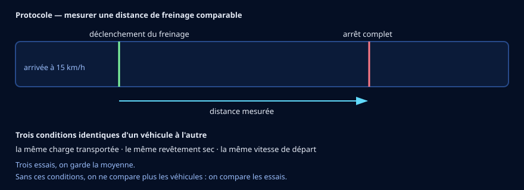
a) Lire le protocole avant de mesurer
b) Exploiter les résultats
| Solution | Distance de freinage à 15 km/h | Rayon de braquage | Bruit |
|---|---|---|---|
| S1 — vélo-cargo | 3,2 m | 2,1 m | 54 dB(A) |
| S2 — fourgonnette | 5,8 m | 5,4 m | 62 dB(A) |
| S3 — robot | 1,6 m | 1,2 m | 49 dB(A) |
c) Ce que la mesure prouve — et ce qu'elle ne prouve pas
🪜 Version étayée — des phrases à compléter
Le niveau attendu est exactement le même : on retire l'obstacle de la rédaction, pas l'exigence.
- « Les mesures montrent que ____ s'arrête le plus court, parce que ____. »
- « Elles ont été faites dans les mêmes conditions : ____, ____ et ____. »
- « En revanche, elles ne disent rien de ____. »
💡 Aide de niveau 1
Un protocole sert à une seule chose : faire en sorte que la seule différence entre deux essais soit celle qu'on veut mesurer.
💡💡 Aide de niveau 2
Pour la dernière question, cherche ce qui n'est pas dans le tableau : rien sur le coût, rien sur la durée de vie, rien sur ce qui se passe sous la pluie, rien sur le nombre de colis livrés à l'heure. Une mesure est toujours partielle — c'est pour cela qu'on en fait plusieurs, et qu'on les croise.
📖 Correction complète
Un protocole fixe les conditions pour que la comparaison ait un sens. Charge identique, revêtement identique, vitesse identique : sans cela, on ne compare plus des véhicules, on compare des essais. C'est la faute la plus fréquente, et elle invalide tout le travail.
Trois essais et une moyenne : une mesure isolée peut être ratée — un freinage déclenché trop tôt, une roue qui glisse. La moyenne réduit ce hasard sans le supprimer.
Les distances vont dans le même sens que les masses : 95 kg s'arrête en 1,6 m, 1350 kg en 5,8 m. Mais attention : cela ne veut pas dire que la masse EXPLIQUE la distance. Les trois véhicules diffèrent aussi par leurs freins, leurs pneus et leur empattement — et un relevé où tout change à la fois ne peut désigner aucune cause. Nous tenons une correspondance, pas une explication. Pour trancher, il faudrait charger le même véhicule à deux masses différentes : c'est exactement la règle du « on ne fait varier qu'une chose » que nous venons d'appliquer aux essais.
Enfin, ces mesures ne disent rien du coût, de la durée de vie, du comportement sous la pluie ni du nombre de colis livrés par heure. Elles valent pour ce qu'elles ont mesuré, le jour où elles l'ont mesuré.
🧠 À retenir : mesurer, c'est d'abord fixer les conditions. Une mesure prouve ce qu'elle a mesuré, dans les conditions où elle l'a mesuré — pas davantage.
⚠️ Piège classique : comparer deux essais faits dans des conditions différentes et croire qu'on a comparé deux objets.
Critère de réussite : tu sais dire pourquoi chaque condition du protocole est imposée, lire le tableau, et nommer une chose que ces mesures ne permettent pas de conclure.
🧰 Avant de commencer (échauffement) — les quatre gestes du tableur
Quatre gestes à faire une fois, au début, et ta séance ne se perdra pas. Tu les as peut-être déjà faits une autre année : refais-les, c'est court. Et si tu ne les as jamais faits, tout est écrit ici — tu n'as besoin de rien d'autre.
- Ouvrir. Ouvre le tableur (LibreOffice Calc), puis ouvre le fichier 📥
donnees_vehicules_dernier_kilometre_shanghai_simulees.csv(clique ici pour le télécharger) (Fichier → Ouvrir…). Dans la fenêtre d'import, garde Point-virgule coché comme séparateur et valide.![Boîte de dialogue « Import de texte » de LibreOffice Calc, en français et en mode sombre, pour le fichier donnees_vehicules_dernier_kilometre_shanghai_simulees.csv. En haut : Jeu de caractères « - Automatique - » avec la mention Europe occidentale (ISO-8859-1) en dessous, Locale « Par défaut - Français (France) », À partir de la ligne 1. Dans « Options de séparateur », le bouton « Séparé par » est sélectionné ; parmi les cases Tabulation, Virgule, Point-virgule, Espace et Autre, seule Point-virgule est cochée. En bas, l'aperçu montre les données réparties en colonnes : id_solution, solution, materiau_structure, masse_kg, source_energie, puis les trois lignes S1, S2 et S3 — le vélo-cargo, la fourgonnette et le robot. Les boutons OK et Annuler sont en bas à droite.](Images/geste_tableur_1_ouvrir_import_csv.png)
Ce que tu dois voir : dans « Options de séparateur », la case Point-virgule cochée, et l'aperçu du bas déjà découpé en colonnes. Si c'est « Détecté (;) » qui est sélectionné, c'est bon aussi : le (;) dit que le point-virgule a été reconnu. Puis : clique OK. Le fichier a vingt colonnes : l'aperçu n'en montre que les premières, les autres arrivent avec elles. 
Comment savoir que c'est fait : chaque donnée est dans sa propre colonne, avec les titres sur la ligne 1. Regarde la colonne masse_kg : les nombres sont collés à droite de leur cellule. C'est la preuve que le tableur les a compris comme des nombres, et non comme du texte. 
Si tu vois ceci : tout est collé dans la colonne A, points-virgules compris, et chaque ligne s'arrête net, à un endroit différent — là où se trouvait sa première virgule. Le séparateur choisi n'était pas le bon : c'était la virgule, qui sert ici à l'intérieur des textes et comme virgule décimale. Ferme le fichier sans l'enregistrer (Fichier → Fermer), recommence Fichier → Ouvrir… et coche Point-virgule. - Nommer. Fichier → Enregistrer sous… tout de suite, au format Classeur ODF (.ods), sous
5E-VEHICULES-TON NOM, dans Documents, dans le dossier qui porte le nom de ta classe (par exemple5E1). Si ce dossier n'existe pas encore, crée-le d'abord : dans la fenêtre d'enregistrement, ouvre Documents, clique sur Nouveau dossier, tape le nom de ta classe, valide, puis entre dedans.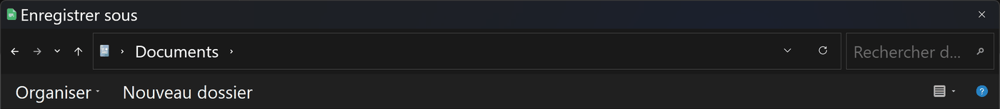
Ce que tu dois voir : le chemin, tout en haut, finit par Documents. Si la fenêtre s'ouvre ailleurs — Téléchargements, par exemple — clique sur Documents dans la colonne de gauche. Seul le haut de la fenêtre est montré ici : en dessous, tu verras la liste de tes propres dossiers. Cherche dedans celui qui porte le nom de ta classe : s'il y est, entre dedans (double-clic) et passe aux trois dernières images ; s'il n'y est pas, continue ci-dessous. 
Le bouton Nouveau dossier : il est écrit en toutes lettres, dans la barre au-dessus de la liste des fichiers, juste à droite d'Organiser. Clique dessus. 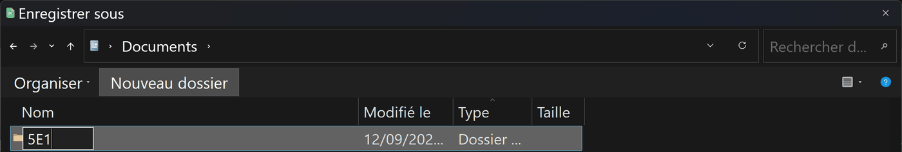
Ce que tu dois voir : une ligne apparaît dans la liste, avec une case où écrire à la place du nom. Tape le nom de ta classe, puis Entrée. 5E1 est un exemple : mets le nom de ta classe. Ici, la liste a été raccourcie à cette seule ligne ; chez toi, tes autres dossiers restent visibles autour. 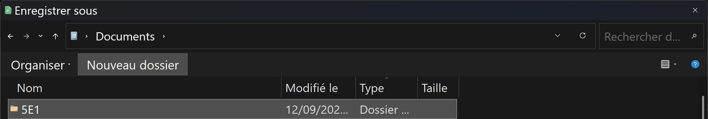
Comment savoir que c'est fait : la case où tu écrivais a disparu, et ton dossier porte son nom, avec la mention Dossier dans la colonne Type. Windows n'entre pas dedans tout seul : double-clique sur son nom pour y entrer. 5E1 est un exemple. 
Ce que tu dois voir avant d'enregistrer : trois choses. Le chemin, en haut, finit par Documents puis le nom de ta classe ; le Nom du fichier suit la consigne ; Type : Classeur ODF (*.ods) — si tu lis encore « Texte CSV », ouvre la liste et choisis Classeur ODF. Puis : Enregistrer. DUPONT et 5E1 sont des exemples : mets ton nom et ta classe. 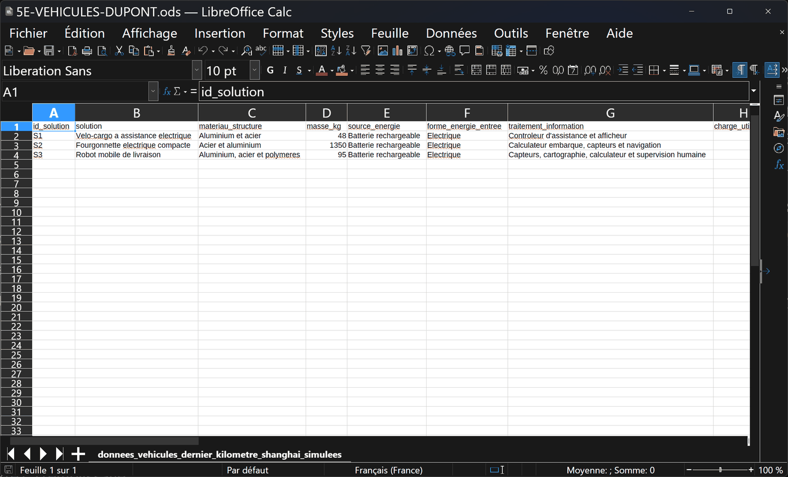
Comment savoir que c'est fait : la barre de titre, tout en haut, affiche ton nom de fichier suivi de .ods, et non plus .csv. L'onglet du bas, lui, garde le nom de la feuille : c'est normal. DUPONT est un exemple. 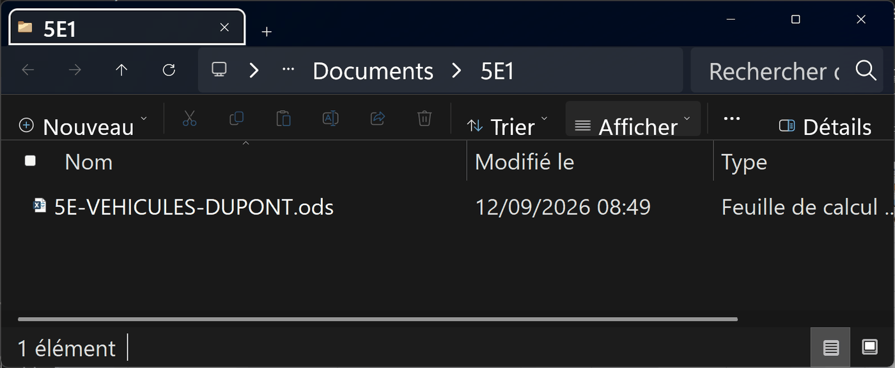
Pour vérifier, ou pour le retrouver plus tard : ouvre l'Explorateur de fichiers de Windows, va dans Documents, puis dans le dossier de ta classe : ton fichier .ods est là. Ce chemin — Documents, puis ta classe — est celui à refaire à la séance suivante. 5E1 et DUPONT sont des exemples. - Retrouver. Le tableur n'enregistre pas tout seul : Ctrl+S après chaque série de saisies. Rouvre ton fichier au début de la séance suivante pour vérifier qu'il est complet.

Ce que tu dois voir avant Ctrl+S : tu as tapé quelque chose (ici « indicateur » en U1, la colonne que l'activité 4 te fait ajouter après la dernière), et en bas à gauche de la fenêtre, la petite icône de la barre d'état est rouge : ce qui est à l'écran n'est pas encore sur le disque. Le raccourci n'ouvre aucune fenêtre : c'est cette icône qui te répond. 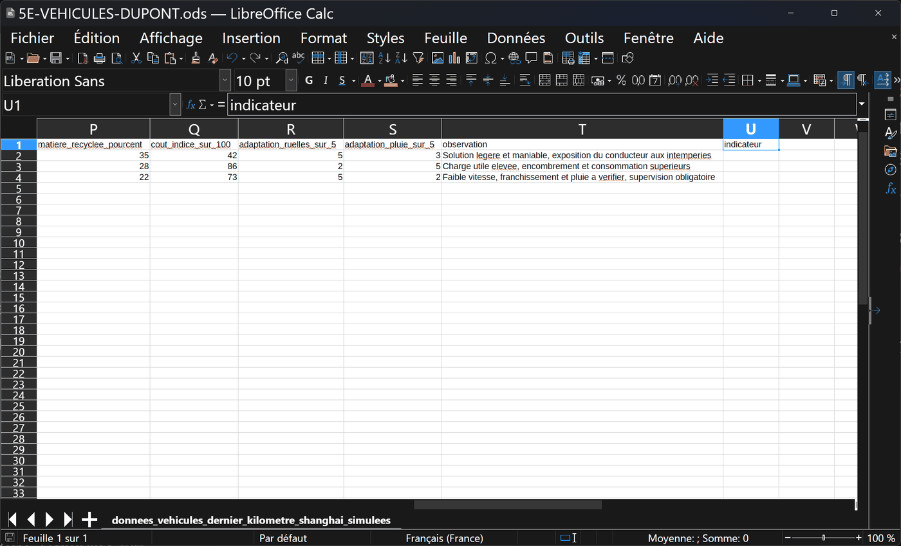
Comment savoir que c'est fait : après Ctrl+S, l'icône en bas à gauche redevient grise. Rien d'autre ne change à l'écran : c'est normal. 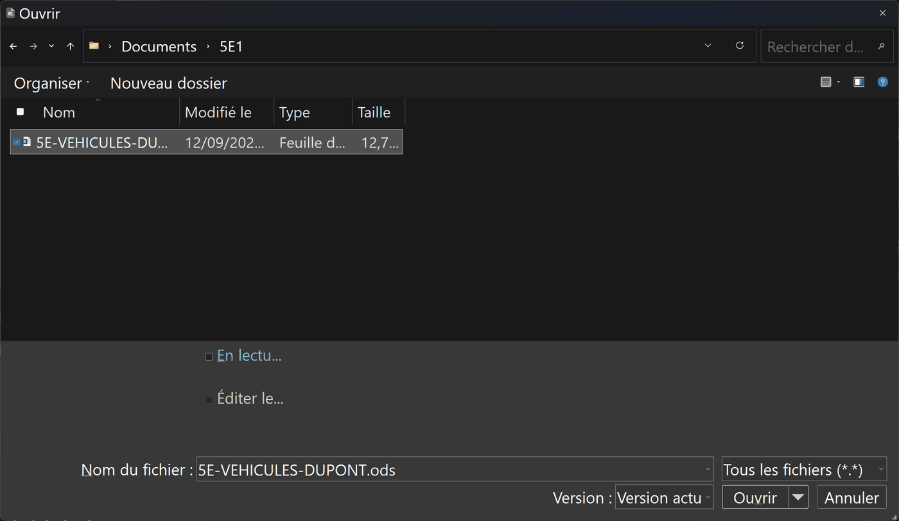
Pour rouvrir à la séance suivante : Fichier → Ouvrir…, va dans Documents, puis dans le dossier de ta classe, et choisis le fichier qui finit par .ods — pas le .csv, qui est le fichier de départ, sans ton travail. Le nom complet s'écrit en bas, dans Nom du fichier : c'est là qu'on vérifie. Le nom et le dossier sont des exemples. - Sortir. Le classeur est le rendu. Un graphique se copie dans le compte rendu, ou s'exporte en image par un clic droit.
![Fenêtre de LibreOffice Calc en mode sombre avec un diagramme en colonnes posé sur la feuille et sélectionné : de petites poignées carrées l'entourent. Un menu contextuel est ouvert par-dessus : Couper, Copier, Coller, Position et taille, Ancre, Positionner, Nom, Texte alternatif, Assigner la macro, Exporter comme image, Éditer. Le diagramme oppose deux séries, adaptation_ruelles_sur_5 en bleu et adaptation_pluie_sur_5 en orange, pour les trois solutions numérotées 1, 2 et 3. À gauche, on lit encore les colonnes de données, dont adaptation_ruelles_sur_5 et adaptation_pluie_sur_5.](Images/geste_tableur_4_sortir_clic_droit_graphique.png)
Ce que tu dois voir : un clic sur le graphique (des petites poignées carrées apparaissent autour), puis un clic droit : le menu propose Copier (pour le coller dans le compte rendu) et Exporter comme image. Le graphique montré est un exemple, construit sur les deux notes d'adaptation du cahier des charges ; les numéros 1, 2 et 3 de l'axe sont les trois solutions S1, S2 et S3, dans l'ordre du tableau. 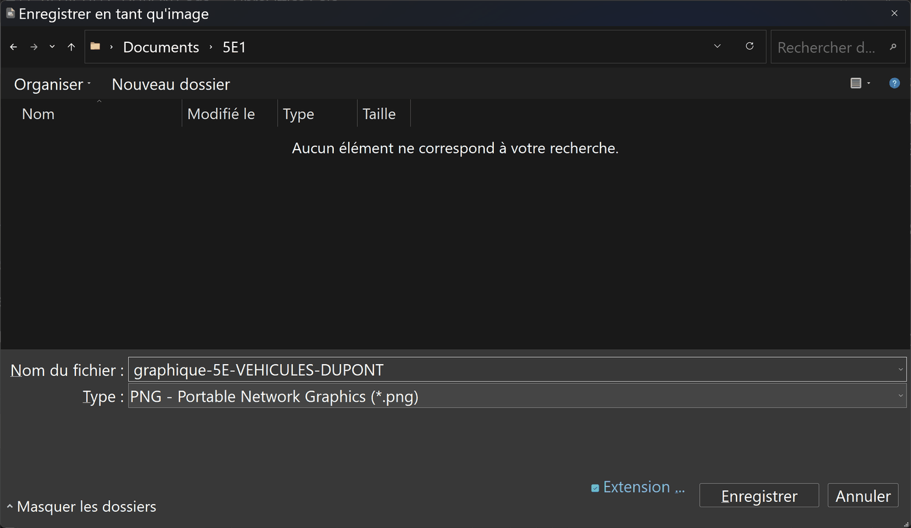
Comment savoir que c'est fait : après Exporter comme image, cette boîte s'ouvre ; garde le type PNG, donne un nom, vérifie que le chemin finit par le nom de ta classe, Enregistrer. Le fichier image apparaît dans ton dossier, à côté du classeur. Le nom et le dossier sont des exemples.
📊 Activité 4 — L'indicateur multicritère, au tableur (~30 min)
Ouvre le fichier de données dans un tableur. Il contient les vingt colonnes des trois solutions. Le cahier des charges du centre logistique :
- transporter au moins 80 kg de colis par tournée ;
- tenir une tournée de 35 km sans recharger ;
- circuler dans des ruelles étroites (adaptation aux ruelles ≥ 4 sur 5) ;
- rouler par tous les temps (adaptation à la pluie ≥ 3 sur 5).
a) Filtrer selon le cahier des charges
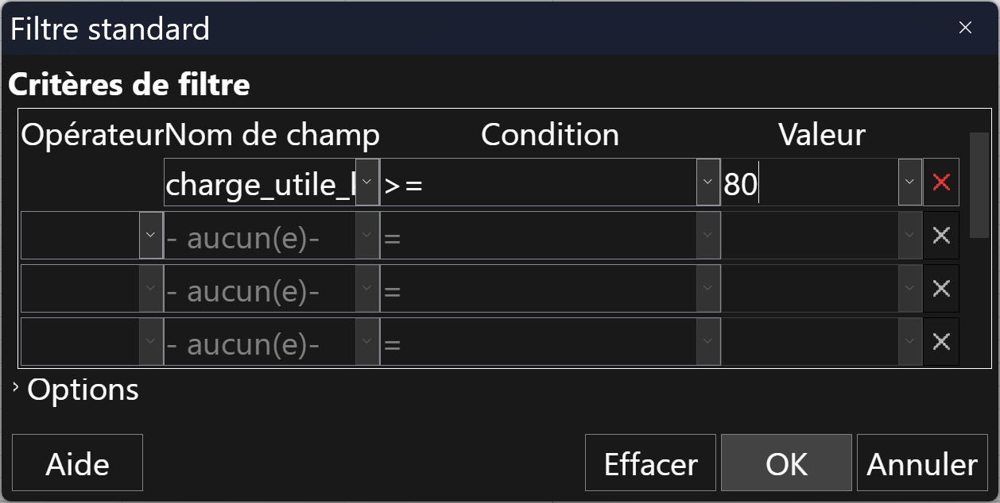
charge_utile_kg, Condition >=, Valeur 80. Puis : OK. La case coupe le nom du champ : c'est la boîte qui est étroite, le nom complet est bien choisi.>= veut dire « supérieur ou égal », la borne est gardée, exactement comme « au moins 80 kg ». Note qui tombe, puis reproduis la même méthode pour les trois autres exigences : rouvre Filtre standard… (la boîte garde le critère précédent), change le champ, la condition et la valeur, OK. Les valeurs sont celles du fichier de la séquence.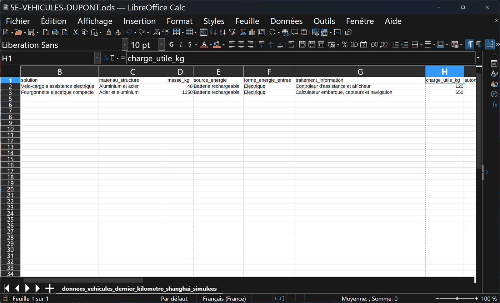
> (« strictement supérieur ») au lieu de >= : 80 n'est pas strictement plus grand que 80, alors S3 tombe — à tort, puisqu'il porte bien « au moins 80 kg ». Rouvre Filtre standard… et remets >=. Aucun message ne te prévient : c'est toi qui dois relire la condition.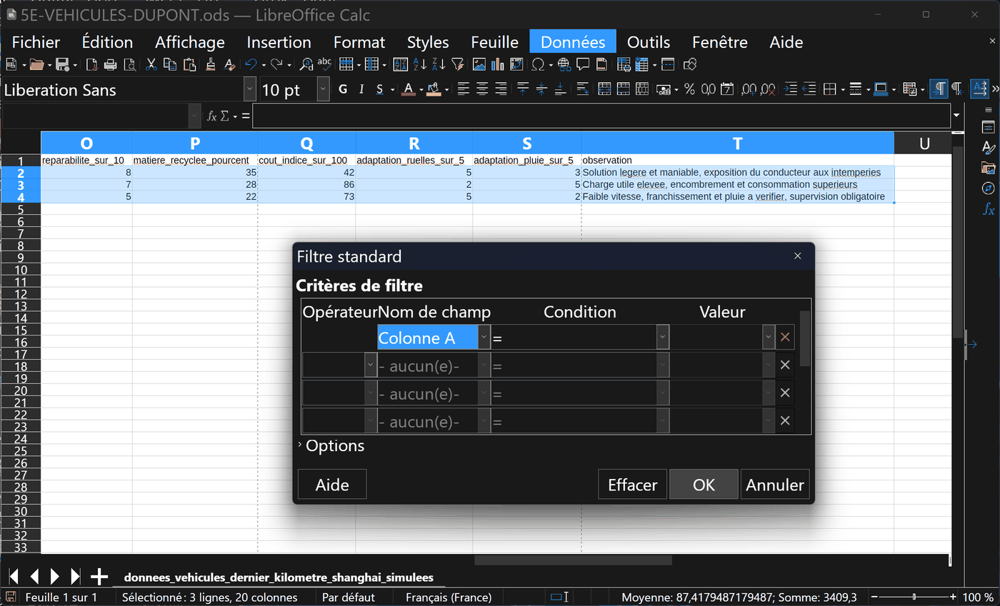
id_solution, et tu ne trouves pas charge_utile_kg dans la liste. Tu as sélectionné les données sans la ligne des titres : la ligne 1 n'est pas surlignée. Annuler, sélectionne à partir de A1, recommence.b) Construire l'indicateur
Ajoute une colonne indicateur et fais calculer, pour chaque solution :
la somme de trois notes sur 5 : réparabilité ÷ 2 + adaptation ruelles + adaptation
pluie (la réparabilité est notée sur 10, d'où le ÷ 2). On n'additionne que des notes de
même nature — jamais des kilomètres avec des points. Une formule, recopiée vers le bas — jamais
trois calculs à la main.
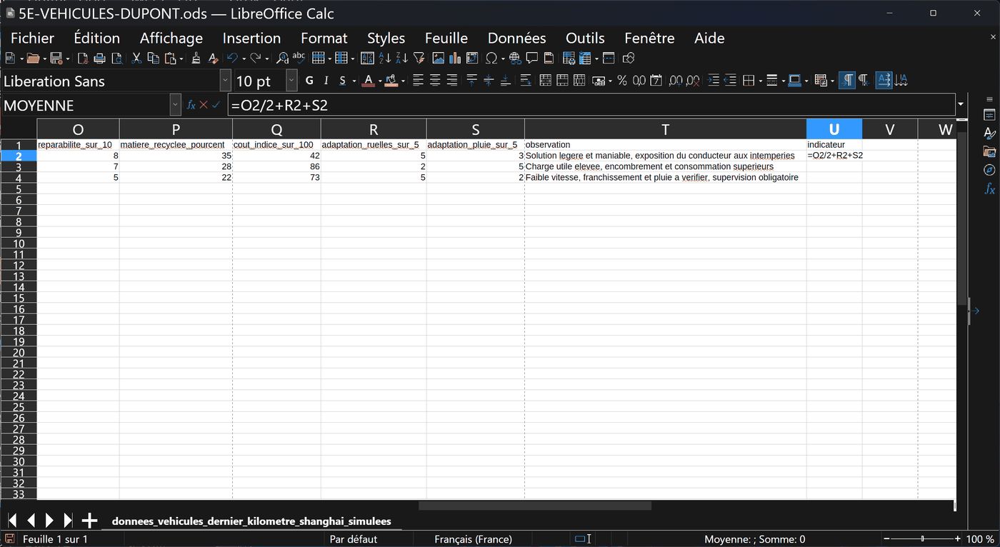
indicateur en U1, la première colonne libre, puis, en U2, la formule =O2/2+R2+S2 écrite dans la cellule et dans la barre, avant Entrée. Les lettres sont celles de ton fichier : O = reparabilite_sur_10, R = adaptation_ruelles_sur_5, S = adaptation_pluie_sur_5 — lis-les dans la bande des lettres, juste au-dessus des titres. Le 2 est le numéro de la ligne de S1. Pendant la saisie, la zone de nom, en haut à gauche, affiche « MOYENNE » : ce n'est pas ta formule, c'est la liste des fonctions, ignore-la.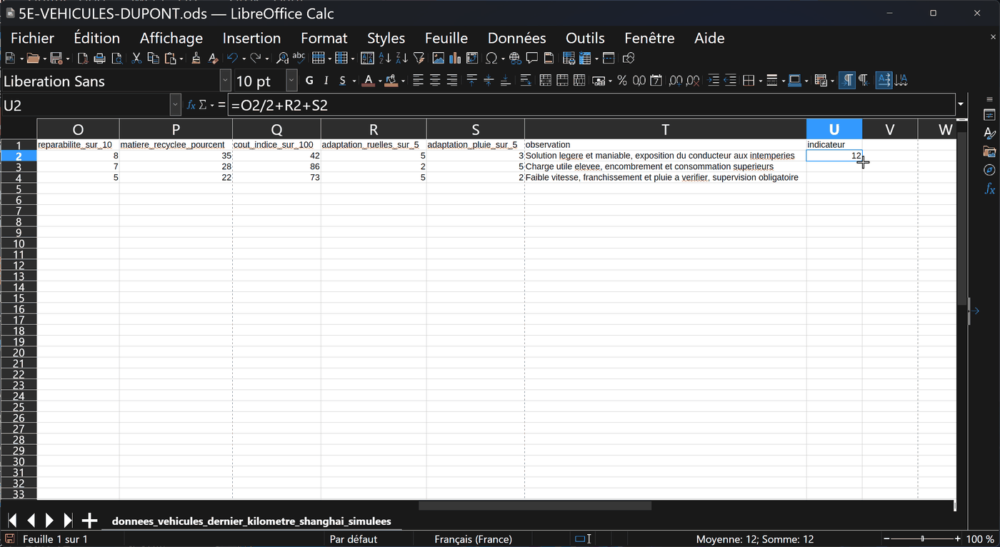
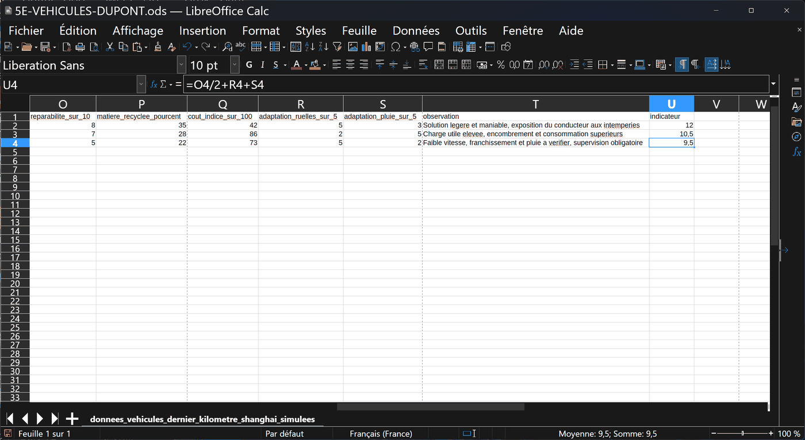
=O4/2+R4+S4. Tu n'as rien retapé : en descendant, le tableur a changé tout seul les numéros de ligne, 2 est devenu 4. C'est ce qu'on appelle recopier une formule. Les valeurs sont celles du fichier de la séquence.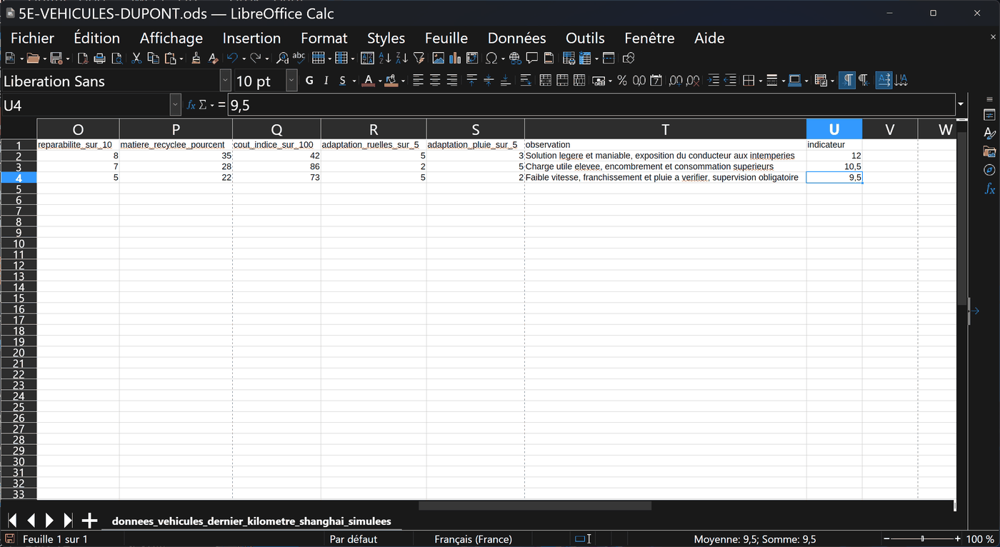
=, pas de lettres. Ces résultats ont été tapés à la main. Ils sont justes aujourd'hui, mais si une note change dans le tableau, rien ne se recalcule, et personne ne peut vérifier d'où ils viennent. Clique sur chaque cellule de la colonne : la barre doit toujours montrer une formule. Sinon, efface, réécris la formule en U2 et recopie-la.💡 Aide de niveau 1
Pour le filtre, traite les exigences une par une, et note à chaque fois qui tombe. Une solution est écartée dès qu'elle rate une seule exigence.
💡💡 Aide de niveau 2
Les quatre exigences : charge ≥ 80, autonomie ≥ 35, ruelles ≥ 4, pluie ≥ 3. S1 donne 120 · 55 · 5 · 3 : tout passe. S2 donne 650 · 210 · 2 · 5 : les ruelles bloquent. S3 donne 80 · 38 · 5 · 2 : la pluie bloque.
📖 Correction complète
Une seule solution passe les quatre exigences : S1, le vélo-cargo. S2 a la charge et l'autonomie pour elle, mais ne passe pas dans les ruelles (2 sur 5 pour un seuil de 4). S3 est parfait en ruelle mais tient mal la pluie (2 sur 5 pour un seuil de 3).
Remarque importante : aucune des trois n'est « mauvaise ». Chacune est excellente sur quelque chose. C'est le cahier des charges qui tranche, pas la qualité en soi.
Une formule vaut mieux qu'un résultat tapé pour deux raisons : elle se recalcule quand une donnée change, et elle montre le raisonnement — un lecteur peut la vérifier, la discuter, la corriger. Un nombre tapé ne se discute pas : on ne sait pas d'où il vient.
Enfin, un indicateur qui additionne trois notes sur 5 n'est pas une mesure : c'est un choix — le nôtre. Nous avons retenu la réparabilité, les ruelles et la pluie, et décidé de les compter à égalité ; un autre choix donnerait un autre classement. Et l'on n'additionne que des notes de même nature : des kilomètres plus des points, cela ne veut rien dire. Il aide à décider à condition de dire ce qu'on y a mis, et pourquoi.
🧠 À retenir : un cahier des charges transforme une opinion en décision. Ce n'est pas « quelle solution est la meilleure », c'est « laquelle respecte les exigences ».
Critère de réussite : ton classeur contient une colonne calculée par formule, un tri et un filtre, et tu sais dire sur quelle exigence chaque solution écartée est tombée.
🧭 Activité 5 — Décider, et assumer la décision (~20 min)
🪜 Version étayée — des phrases à compléter
Le niveau attendu est exactement le même : on retire l'obstacle de la rédaction, pas l'exigence.
- « Je vous conseille la solution ____. »
- « D'abord parce que ____ (donnée : ____). »
- « Ensuite parce que ____ (donnée : ____). »
- « Sa limite est ____ : elle ne convient pas si ____. »
- « En Martinique, il faudrait adapter ____, à cause de ____. »
📖 Correction complète
Avec 400 kg sur 150 km hors centre-ville, c'est S2 qui l'emporte : elle seule a la charge utile et l'autonomie, et la contrainte des ruelles a disparu du besoin.
Ce retournement est la leçon de la séquence. Notre première réponse n'était pas fausse : elle répondait à un autre besoin. Une solution technique n'est jamais bonne dans l'absolu.
Pour la Martinique : fortes pluies et humidité salines toute l'année, reliefs marqués, et un risque cyclonique qui impose un abri. Le vélo-cargo demanderait au minimum une protection du conducteur et une vérification de la tenue à la corrosion ; le robot, lui, tombe d'emblée sur son 2 sur 5 à la pluie.
🧠 À retenir : choisir, c'est comparer des solutions à un besoin, pas entre elles. Changez le besoin, la bonne réponse change.
⚠️ Piège classique : chercher « la meilleure solution ». La question n'a pas de sens tant qu'on n'a pas écrit le cahier des charges.
🪞 Mon bilan personnel
💭 Rappel de ton hypothèse de départ :
🪜 Version étayée — des phrases à compléter
- « Au départ je pensais que ____. »
- « Maintenant je sais que ____, parce que ____ me l'a montré. »
- « Ce qui a changé mon avis, c'est ____. »
🪜 Version étayée — des phrases à compléter
- « J'ai appris qu'on caractérise un objet par ____, ____ et ____. »
- « J'ai appris que l'étape du cycle de vie qui pèse le plus est ____. »
- « J'ai appris qu'un protocole sert à ____. »
🪜 Version étayée — des phrases à compléter
- « Je sais maintenant repérer ____ dans un objet technique. »
- « Je sais maintenant comparer deux solutions en ____. »
- « Je sais maintenant justifier un choix en ____. »
🪜 Version étayée — des phrases à compléter
- « Je dois encore revoir ____, parce que ____. »
- « Ce que je n'arrive pas encore à faire seul·e : ____. »
- « Pour progresser, la prochaine fois je ____. »
Je me positionne
🧠 Prêt·e à t'entraîner ?
Le QCM de la séquence t'attend : 30 questions dont 3 illustrées, sur les matériaux, l'énergie, le cycle de vie, la mesure et le choix.
Chaque réponse fausse y est expliquée — c'est là qu'est le travail, bien plus que dans le score.
🎁 Bonus (facultatif — hors parcours obligatoire)
Trois défis ouverts, sans vérificateur : il n'y a pas une seule bonne réponse.
1. Le centre veut ajouter un quatrième critère : le bruit, parce qu'il livre à 6 h du matin près d'habitations. Réécris le cahier des charges et regarde si la réponse change.
2. Invente la cinquième solution qui manquerait au tableau pour battre S1 sur ce besoin précis. Donne-lui ses vingt colonnes, et vérifie qu'elles sont cohérentes entre elles.
3. Le même service, à Sainte-Luce : relief, pluie, sel, cyclone. Que faudrait-il changer au cahier des charges avant même de regarder les véhicules ?